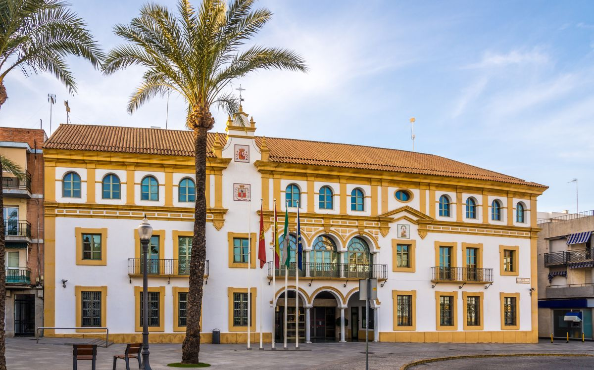
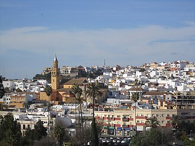
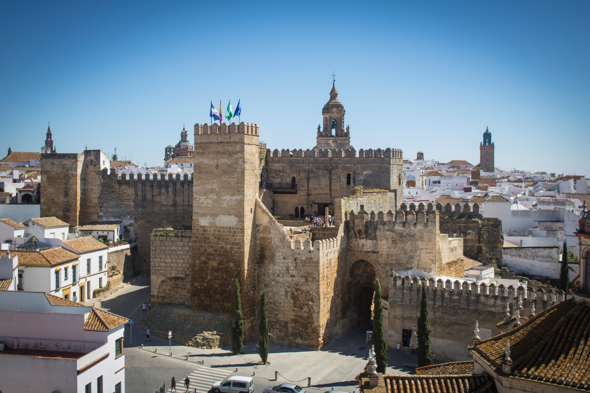
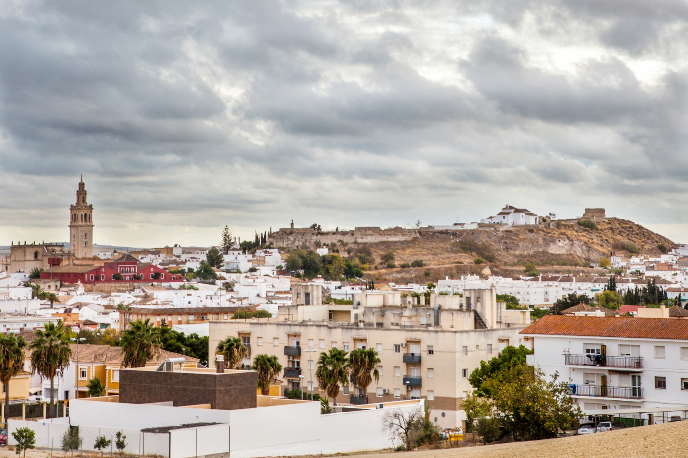
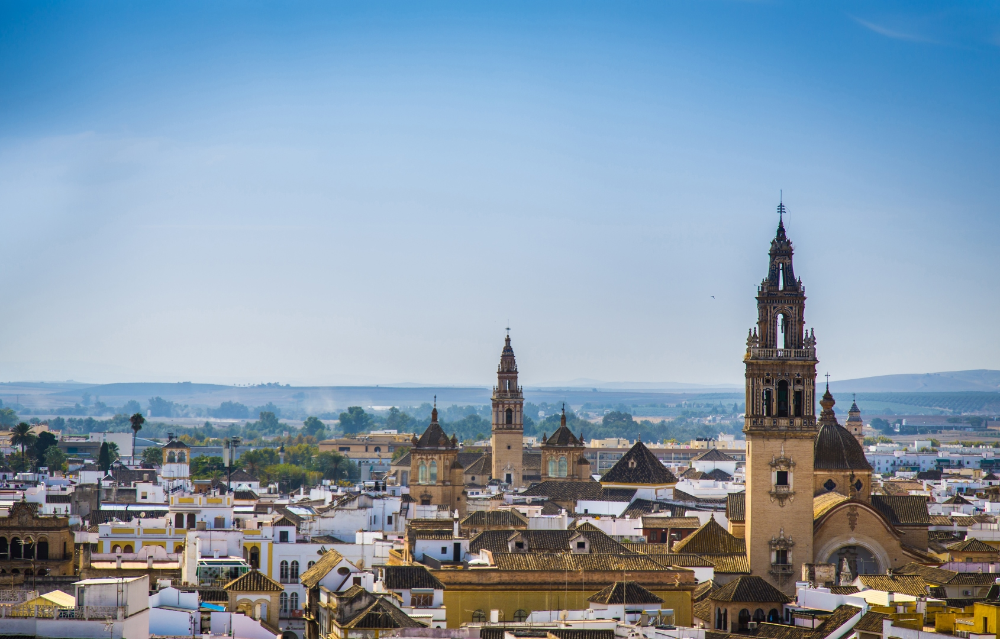
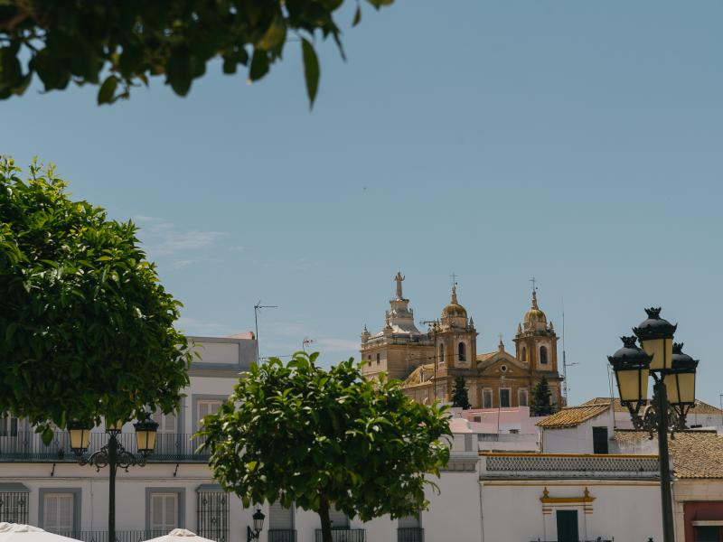
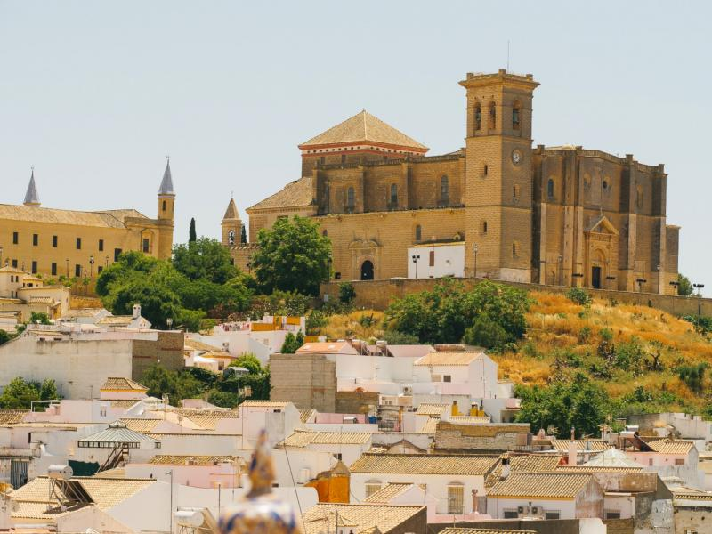
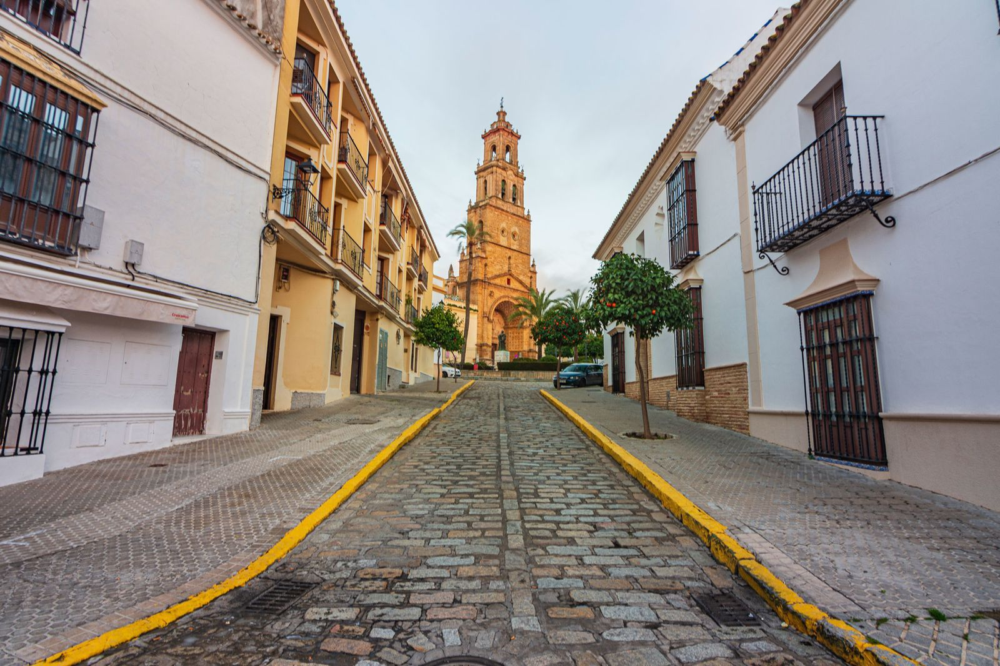

Dos Hermanas es una ciudad de la provincia de Sevilla, en Andalucía, conocida por su rápido crecimiento, su tradición agrícola y su cercanía a la capital sevillana. Es uno de los municipios más poblados de Andalucía y combina zonas urbanas modernas con un importante patrimonio histórico y cultural.

Conocida históricamente como "Alcalá de los Panaderos", destaca por su imponente castillo medieval, sus antiguos molinos harineros a lo largo del río Guadaíra y un valioso entorno natural que rodea su patrimonio monumental.

Se alza sobre una colina dominando la vega sevillana y resguarda una impresionante riqueza histórica que incluye una necrópolis romana, el Alcázar del Rey Don Pedro y un casco antiguo repleto de iglesias y casas palacio.

Es una tierra vinculada estrechamente a la cultura del vino, la alfarería y el arte flamenco, famosa además por ser la cuna de Elio Antonio de Nebrija, el célebre autor de la primera gramática de la lengua castellana.

Denominada popularmente como la "Ciudad del Sol" o la "Sudadera de Andalucía", deslumbra a sus visitantes gracias a sus majestuosas torres barrocas, sus palacios señoriales y sus valiosos mosaicos de la época romana.

Destaca por su valioso patrimonio histórico y artístico, conservando importantes vestigios de sus antiguas murallas, así como iglesias y conventos que reflejan la gran relevancia de la localidad durante diferentes etapas de la historia.

Posee una impresionante estampa monumental coronada por su Colegiata y su Universidad del siglo XVI, ofreciendo uno de los conjuntos arquitectónicos barrocos mejor conservados y más bellos de toda Andalucía.

Considerada una de las grandes cunas del cante flamenco y del toro bravo, cautiva por el trazado medieval de su casco histórico, su imponente castillo y sus iglesias de fachadas góticas y barrocas.